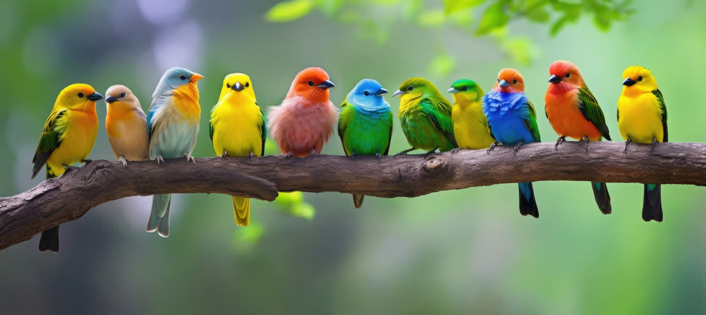
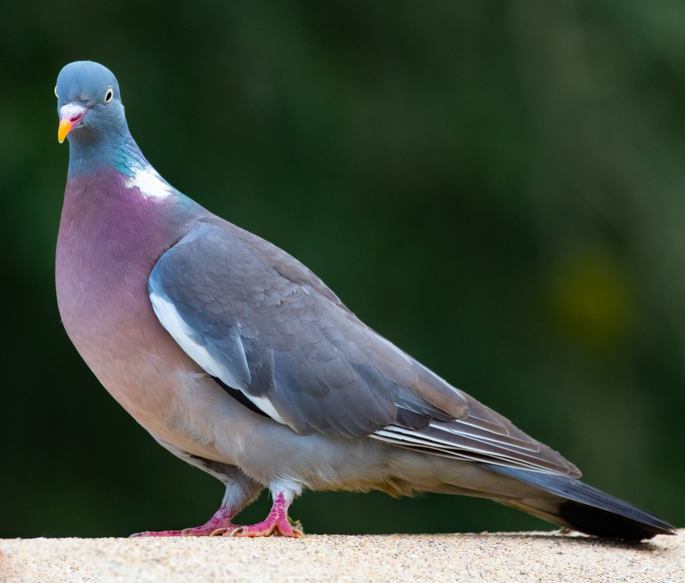
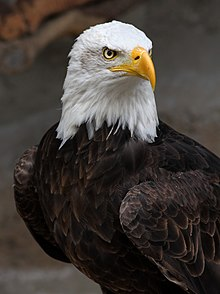
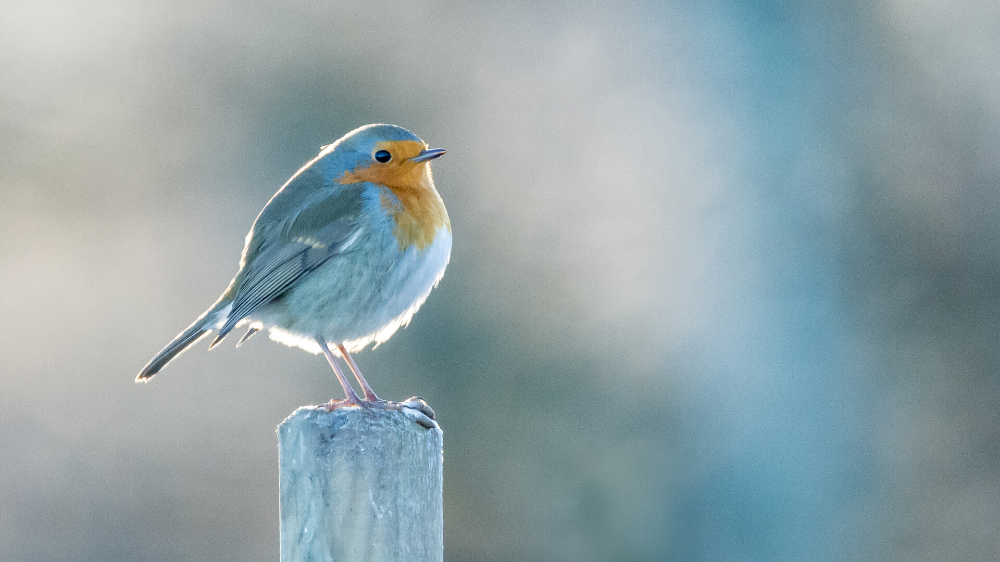
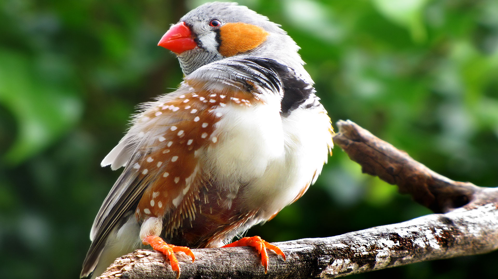
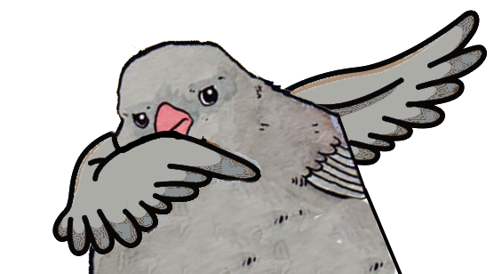

<br>



<br>

<h2 align="center"><u>Thème - oiseaux</u></h2>

<br>

<h4 align="center">Voici une liste non exhaustive des oiseaux les plus répandus dans le monde.</h4>

<br>

<table border align="center" width="80%">

  <thead>
    <tr>
      <th>Image</th>
      <th>Nom</th>
      <th>Couleur</th>
      <th>Géographie</th>
      <th>Vidéo</th>
    </tr>
  </thead>

  <tbody>
    <tr align="center">
      <td></td>
      <td>Emmanuel</td>
      <td>Bleue/Grise</td>
      <td><iframe src="https://www.google.com/maps/embed?pb=!1m18!1m12!1m3!1d5676510.482620921!2d-2.690143278973541!3d45.996547396824774!2m3!1f0!2f0!3f0!3m2!1i1024!2i768!4f13.1!3m3!1m2!1s0xd54a02933785731%3A0x6bfd3f96c747d9f7!2sFrance!5e0!3m2!1sfr!2sfr!4v1743087126150!5m2!1sfr!2sfr" width="400" height="300" style="border:0;" allowfullscreen="" loading="lazy" referrerpolicy="no-referrer-when-downgrade"></iframe></td>
      <td><iframe width="320" height="150" src="https://www.youtube.com/embed/1uR0QJTrNrY?si=ivmDPAafhR1wXuPI" title="YouTube video player" frameborder="0" allow="accelerometer; autoplay; clipboard-write; encrypted-media; gyroscope; picture-in-picture; web-share" referrerpolicy="strict-origin-when-cross-origin" allowfullscreen></iframe></td>
    </tr>


    <tr align="center">
      <td></td>
      <td>Donald</td>
      <td>Blanche/Grise</td>
      <td><iframe src="https://www.google.com/maps/embed?pb=!1m18!1m12!1m3!1d65116503.43833505!2d155.29518797582307!3d5.039372497787674!2m3!1f0!2f0!3f0!3m2!1i1024!2i768!4f13.1!3m3!1m2!1s0x54eab584e432360b%3A0x1c3bb99243deb742!2s%C3%89tats-Unis!5e0!3m2!1sfr!2sfr!4v1743087768406!5m2!1sfr!2sfr" width="400" height="300" style="border:0;" allowfullscreen="" loading="lazy" referrerpolicy="no-referrer-when-downgrade"></iframe></td>
      <td><iframe width="320" height="150" src="https://www.youtube.com/embed/hecXupPpE9o?si=4FFN6hXmOi0r4-kt" title="YouTube video player" frameborder="0" allow="accelerometer; autoplay; clipboard-write; encrypted-media; gyroscope; picture-in-picture; web-share" referrerpolicy="strict-origin-when-cross-origin" allowfullscreen></iframe></td>
    </tr>


    <tr align="center">
      <td></td>
      <td>Vladimir</td>
      <td>Blanche/Bleue/Orange</td>
      <td><iframe src="https://www.google.com/maps/embed?pb=!1m18!1m12!1m3!1d43927996.78414154!2d63.35537092786967!3d47.77849771428697!2m3!1f0!2f0!3f0!3m2!1i1024!2i768!4f13.1!3m3!1m2!1s0x453c569a896724fb%3A0x1409fdf86611f613!2sRussie!5e0!3m2!1sfr!2sfr!4v1743087809191!5m2!1sfr!2sfr" width="400" height="300" style="border:0;" allowfullscreen="" loading="lazy" referrerpolicy="no-referrer-when-downgrade"></iframe></td>
      <td><iframe width="320" height="150" src="https://www.youtube.com/embed/pbxkb08SXSY?si=ufxFsLUS07yXYiXR" title="YouTube video player" frameborder="0" allow="accelerometer; autoplay; clipboard-write; encrypted-media; gyroscope; picture-in-picture; web-share" referrerpolicy="strict-origin-when-cross-origin" allowfullscreen></iframe></td>
    </tr>


  <tr align="center">
    <td></td>
    <td>Jiping</td>
    <td>Blanche/Grise/Orange</td>
    <td><iframe src="https://www.google.com/maps/embed?pb=!1m18!1m12!1m3!1d27124527.809864514!2d82.81421135817801!3d33.912836426212365!2m3!1f0!2f0!3f0!3m2!1i1024!2i768!4f13.1!3m3!1m2!1s0x31508e64e5c642c1%3A0x951daa7c349f366f!2sChine!5e0!3m2!1sfr!2sfr!4v1743087843200!5m2!1sfr!2sfr" width="400" height="300" style="border:0;" allowfullscreen="" loading="lazy" referrerpolicy="no-referrer-when-downgrade"></iframe></td>
    <td><iframe width="320" height="150" src="https://www.youtube.com/embed/9-kB-REdXNU?si=zVoujxwQ4_3azpRm" title="YouTube video player" frameborder="0" allow="accelerometer; autoplay; clipboard-write; encrypted-media; gyroscope; picture-in-picture; web-share" referrerpolicy="strict-origin-when-cross-origin" allowfullscreen></iframe></td>
  </tr>


  <tr align="center">
    <td></td>
    <td>Jordan</td>
    <td>Grise</td>
    <td><iframe src="https://www.google.com/maps/embed?pb=!1m18!1m12!1m3!1d5248.597941905098!2d2.3460256999999998!3d48.87157690000001!2m3!1f0!2f0!3f0!3m2!1i1024!2i768!4f13.1!3m3!1m2!1s0x47e66e47a6144249%3A0x54e653d31dc451e9!2sAJC%20Formation!5e0!3m2!1sfr!2sfr!4v1743082941232!5m2!1sfr!2sfr" width="400" height="300" style="border:0;" allowfullscreen="" loading="lazy" referrerpolicy="no-referrer-when-downgrade"></iframe></td>
    <td><iframe width="320" height="150" src="https://www.youtube.com/embed/_KBudxCO61w?si=gmWU1ItFLJ8zoXuy" title="YouTube video player" frameborder="0" allow="accelerometer; autoplay; clipboard-write; encrypted-media; gyroscope; picture-in-picture; web-share" referrerpolicy="strict-origin-when-cross-origin" allowfullscreen></iframe></td>
  </tr>

</tbody>

</table>

<br>
<br>
<br>


<br

<p><del>Auteur inconnu</del></p>
